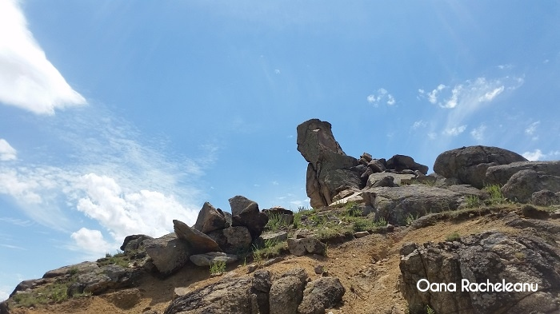

Dobrogea este un tinut atat de vechi incat pare ca, ori de cate ori l-ai vizita, tot mai ramane ceva nedescoperit. Sau ceva pe care-l vezi cu alti ochi. Manastirile din regiune atrag turistii, ce-i drept; Manastirea Dervent si Manastirea Pestera Sfantului Apostol Andrei sunt in top. Exista insa multe alte obiective interesante, pe care nu ar trebui sa le ratezi in excursiile pe care le faci in aceasta regiune. Vom trece in revista 5 astfel de locuri de neratat.
1.Cheile DobrogeiCanionul format din calcare de pe vremea jurasicului este impresionant, desi nu are o lungime foarte mare. Accesul se face prin Cernavoda – Satu Nou – Cuza Voda – Mihail Kogalniceanu – Targusor – Cheia. Rezervatia intinsa pe mai mult de 200 de hectare cuprinde vechi recifuri de corali ale Marii Thetis si specii de fosile perfect conservate in calcarele stancilor, unice in tara. Cheile sunt spectaculoase in orice anotimp, desi in timpul verii albul calcarelor ofera imagini de vis, contrastante, alaturi de verdele vegetatiei. Este si perioada in care Cheile Dobrogei intra in “vizorul” turistilor si al localnicilor iesiti la iarba verde. Ce poti sa vezi? Pe langa peisajele frumoase, exista foarte multe pesteri sapate in stancile calcaroase, care adapostesc diferite specii de plante si adevarate comori arheologice. Pestera Liliecilor si pestera La Adam sunt doua dintre cele mai vizitate obiective de acest gen. Daca ai vizitat Cheile Bicazului sau Cheile Dambovicioarei, de exemplu, nu te astepta sa intalnesti ceva asemanator in aceasta regiune; Cheile Dobrogei nu sunt atat de inalte (au maxim 40 de metri inaltime) si nici la fel de ascutite (fiind formate din vechi atoli, stancile au forme semirotunde). Dar au forme ciudate, care-ti antreneaza imaginatia si te fac sa le dai nume in functie de “ceea ce vezi”. Asa se face ca in Cheile Dobrogei vei intalni “Fata” – o stanca sculptata de vreme sub forma unei fete omenesti. Sigur vei vrea sa o fotografiezi! Pestera Casian
2.Pestera CasianPentru ca vorbeam mai devreme de pesterile-comori ascunse in inima Cheilor Dobrogei, iti sugeram un alt obiectiv de neratat in Dobrogea: Pestera Casian. Cand ajungi in Targusor, chiar inainte sa intri in localitate traverseaza linia de cale ferata si urmareste indicatoarele care te duc catre Manastirea Sf. Ioan Casian. Este primul pas catre Pestera Casian, ce face parte din Rezervatia Geologica Cheile Dobrogei. Pestera este de mica adancime, seamana mai mult cu o grota, dar este foarte veche si deosebita, la fel ca peisajul di-mprejur. Si aici vei intalni munti de corali care amintesc ca odata, demult, in locul in care te afli nu exista decat mare. Pestera a fost locuita in secolul IV de Parintele Ioan Casian, unul dintre intemeietorii monahismului, care si-a dorit sa duca o viata de ascet. Accesul in pestera se face pe o scara metalica destul de lunga si de abrupta, care aminteste de Canionul Sapte Scari din Brasov, dar experienta merita.
3.Lacul IacobdealSe spune despre el ca este unic in Romania. Ei hai, inca un loc “unic”! – ai putea spune. Nu te putem opri sa faci asta, dar ca sa fii corect, ar fi bine sa-l vizitezi. Il gasesti la poalele Muntilor Macin, langa localitatea Turcoaia. Iti mai spunem doar ca unic este felul in care s-a format: in zona exista o cariera din care se extragea granit prin dinamitare, pana cand un izvor subteran a umplut si a acoperit toate galeriile, formand lacul pe care-l vedem astazi, cu o adancime ce depaseste 20 de metri. Interesant este ca nu exista nicio apa curgatoare in jur, care sa alimenteze lacul. Malurile lacului Iacobdeal sunt din granit sau pietris amestecat cu pamant.
4.Sfinxul DobrogeiAsemeni Sfinxului din Munti Bucegi, fratele mai mic din Dobrogea este tot o stanca slefuita de ape si vant, care a luat forma unui barbat ce priveste spre pamant. Roca este amplasata in zona de nord a Culmii Pricopanului si face parte din Rezervatia Naturala Muntii Macin. Desi zona este foarte arida, trebuie sa stii ca acele roci au sute de milioane de ani in spate, iar Culmea Pricopanului detine zeci de specii de plante deosebite, care s-au adaptat la mediu. Ai sa fii surprins, de exemplu, sa vezi ici-colo cate o floare rasarita de nicaieri. Sau dintr-o stanca.
